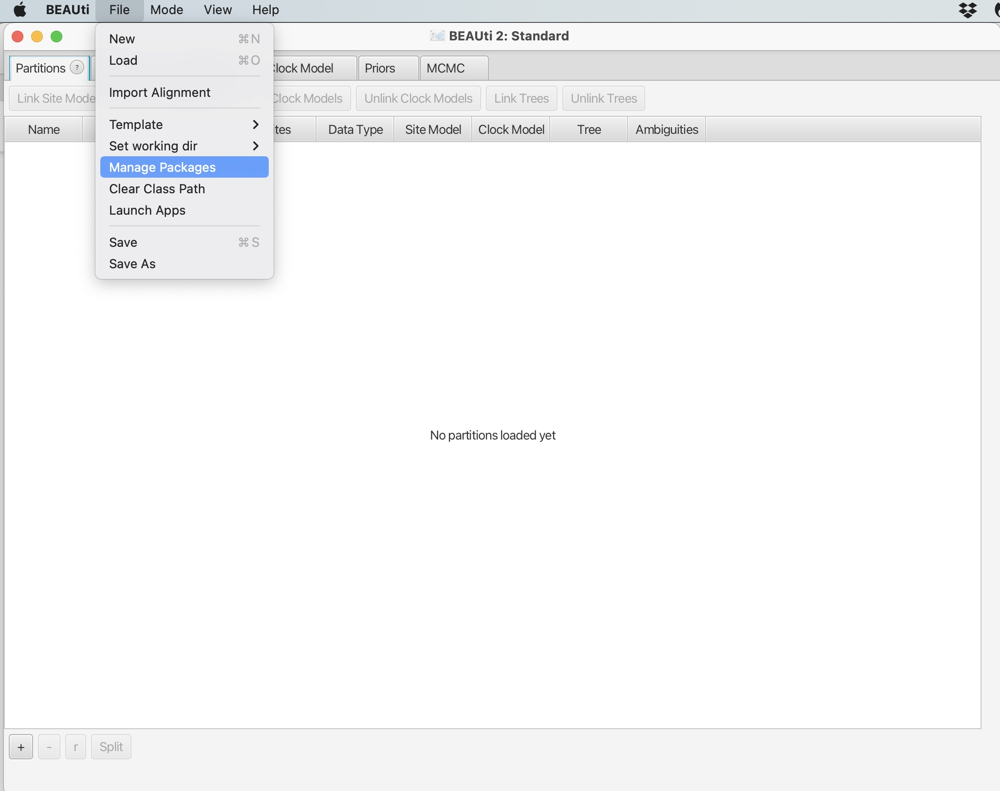
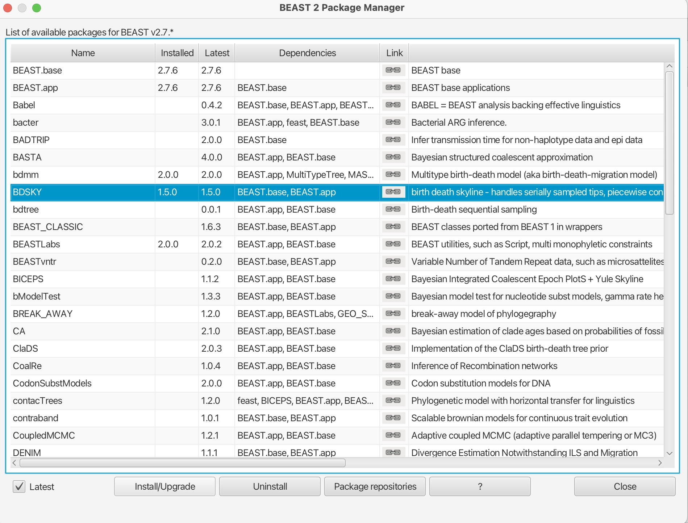
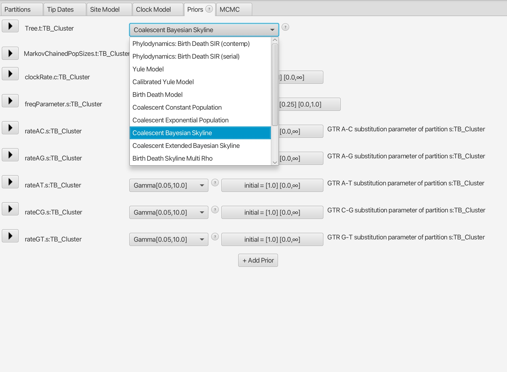
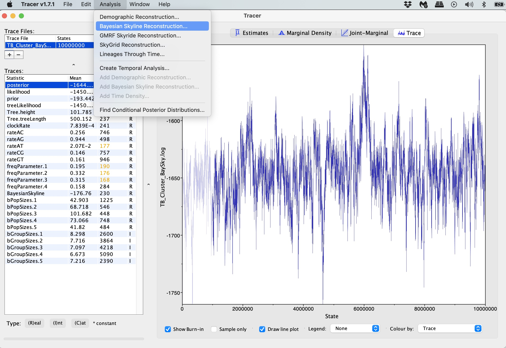
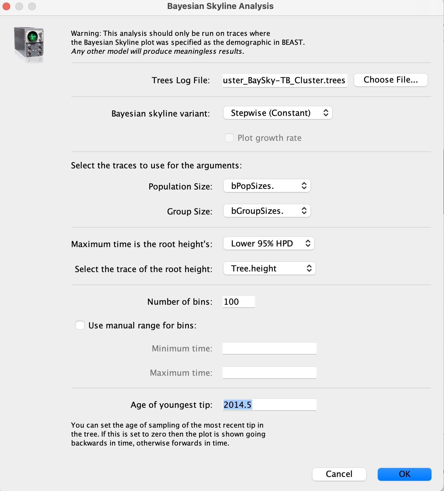
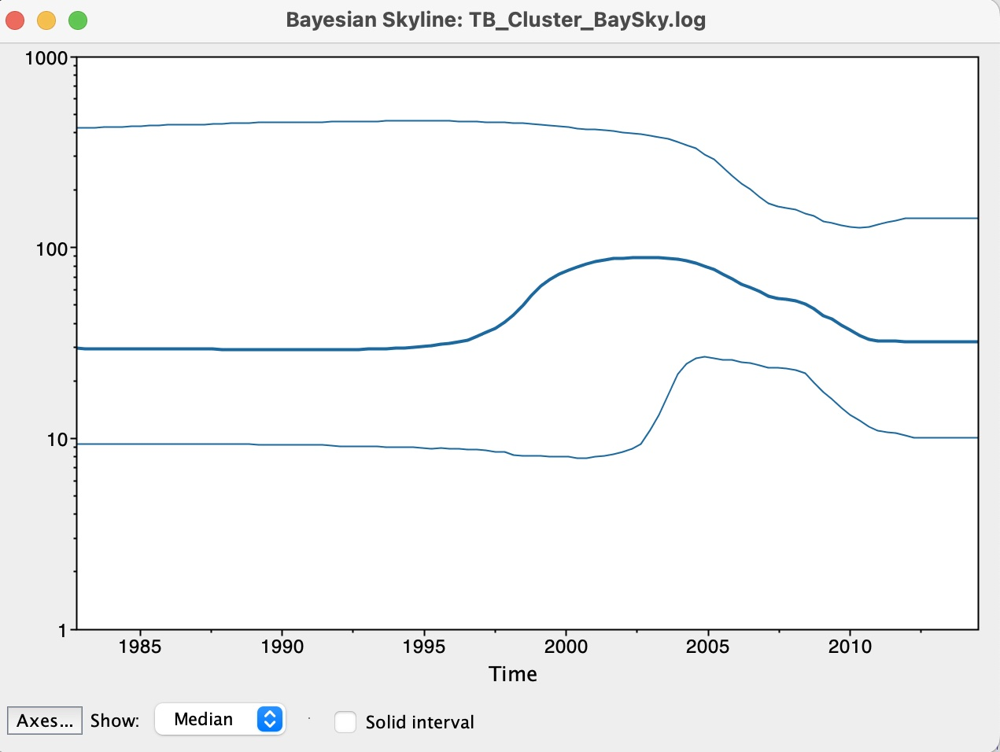

Phylodynamics with BEAST2
Along with inferring timed phylogenies, we can use BEAST (Bayesian Evolutionary Analysis Sampling Trees) to carry out a range of phylogenetic and phylodynamic analyses. BEAST2 is a newer and more advanced version of BEAST, developed by the same team but with a redesigned architecture to provide a modular and extensible framework. As such, there are a variety of packages available in BEAST2 that have been developed for a range of different analyses, such as jointly reconstructing transmission networks with a phylogeny and inferring recombination. Furthermore, BEAST2 allows users to write their own packages to use their underlying Bayesian architecture, as well as providing tutorials to write these packages.
Here, we will run a phylodynamics analysis using the BEAST2 package 'BDSKY' to infer past population dynamics of our TB cluster.
The data we will be using in this exercise are:
-
TB_Cluster.fasta – A FASTA alignment file of concatenated SNPs from 38 M. tuberculosis samples collected between 2005 - 2014 in British Columbia. These isolates all share a MIRU-VNTR type, suggesting they may be linked by transmission.
-
TB_Cluster.txt – A text file with two columns, the name of the 38 M. tuberculosis samples and their collection dates.
Open BEAUti:
1. Click file -> Manage Packages:

2. Scroll down and select the 'BDSKY' package. Click "Install/Upgrade:

This will download the package. You should get a prompt stating it has been successfully installed but that it will need to be restarted for any changes to take effect. Please restart BEAUti.
3. Now load in the data, set the tip dates and set up the site model and clock model as in the previous exercise.
4. The difference in this analysis will be when setting up the tree model. Here we want to select the 'Coalescent Bayesian Skyline' option.

5. Set the number of MCMC iteration to 10 million for this analysis and save the file, it should take around 5 minutes to run.

6. Run your new XML file in BEAST in the same way as the previous exercise.
7. Open Tracer and view your log file. It should hopefully have reached convergence or near convergence at all parameters. We can now view the results of Skyline analysis. Click 'Analysis -> Bayesian Skyline Reconstruction':

8. In the 'Trees Log File' option, load in the resulting .trees file from your BEAST run. We can also set the age of the youngest tip as 2014.6 as we know our most recent sample was collected in July 2014. Press okay to run the analysis:

9. We now have our skyline plot showing an estimate of the past population demography:

Questions:
1. How do we interpret this plot?
2. What can we say about the trajectory of our TB outbreak?
BEAST2 contains many other packages and analysis types that you can explore. Again the Taming the BEAST workshop is a great resource to learn more, including this tutorial on skyline plots.